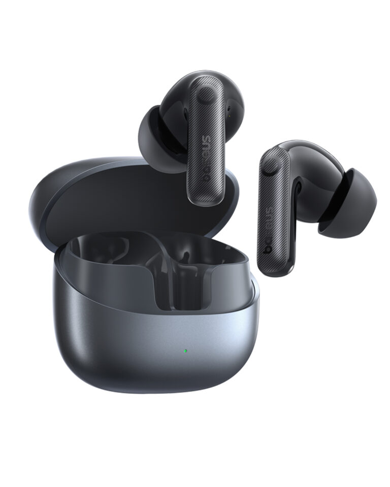
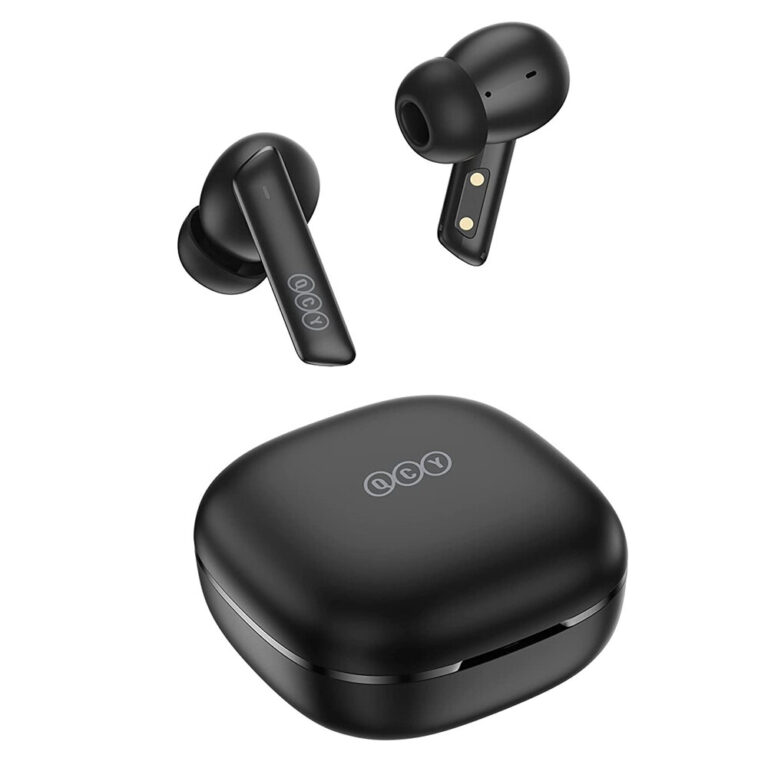
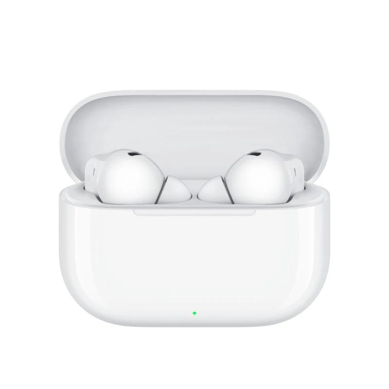

Câu trả lời ngắn trước: có đáng, nhưng chỉ khi bạn hiểu chống ồn làm được gì ở tầm giá này và không mua nhầm hàng ghi "chống ồn" mà thực chất chỉ khử ồn cho cuộc gọi. Dưới 1 triệu giờ đã có tai nghe ANC thật, có mẫu sale xuống dưới 500k. Bài này lọc 3 mẫu chống ồn chủ động thật, giá kiểm tra lại ngày 20/10/2026, và chỉ cách phân biệt ANC với ENC để bạn không mua nhầm.
ANC và ENC khác nhau thế nào: đừng mua nhầm
- ANC (Active Noise Cancellation) là chống ồn chủ động cho tai bạn: micro thu tiếng ồn môi trường, rồi phát sóng âm ngược pha để triệt tiêu. Bạn nghe nhạc thấy yên tĩnh hơn, tiếng quạt, điều hòa, động cơ xe lùi xuống hẳn.
- ENC (Environmental Noise Cancellation) là khử ồn cho cuộc gọi: lọc tạp âm để người ở đầu dây bên kia nghe rõ giọng bạn hơn. Bạn đeo tai nghe gần như không cảm nhận được gì khác khi nghe nhạc.
- Cách phân biệt khi đọc thông số: mẫu có ANC thật thường ghi rõ "ANC hybrid", "feedforward/feedback", "ANC adaptive" kèm con số dB. Mẫu chỉ ghi "khử ồn cuộc gọi", "ENC", "4 mic AI" mà không có dB thì coi chừng, đó không phải tai nghe chống ồn.
So sánh nhanh 3 mẫu ANC
| # | Mẫu | ANC | Pin | Điểm cộng kỹ thuật | Giá tham khảo |
|---|---|---|---|---|---|
| 1 | Baseus Bass BP1 Pro | Adaptive, hãng công bố -50dB | 55h tổng | LDAC Hi-Res, Bluetooth 6.0, IP55 | ~460–500k khi sale |
| 2 | QCY HT05 Melobuds ANC | Hybrid -40dB, 3 cấp độ | 7h / 30h tổng | Driver LCP graphene, chống ồn gió, app tốt | ~890k |
| 3 | Huawei FreeBuds SE 4 ANC | Đa chế độ, lên tới 24dB | 7h ANC on / 50h tổng | Bluetooth 5.4, IP54, 4.3g mỗi tai | ~790k–990k |
Lưu ý: dB là hãng công bố, hiệu quả thực tế còn phụ thuộc độ khít của tips và môi trường. Đừng mua chỉ vì số dB cao hơn.
1. Baseus Bass BP1 Pro — rẻ nhất mà có ANC thật

Giá tham khảo: khoảng 460.000–500.000đ khi sale; giá niêm yết khoảng 759.000đ (giá thay đổi theo đợt sale)
Pick của mình cho ai muốn thử chống ồn với chi phí thấp nhất. ANC adaptive, hãng công bố khử tới -50dB qua 4 cảm biến, có codec LDAC Hi-Res hiếm ở tầm giá này — máy Android đời mới nghe sẽ chi tiết hơn hẳn SBC. Driver 10mm, Bluetooth 6.0, app Baseus chỉnh EQ, 6 mic ENC, IP55, pin tổng 55 giờ. Đánh giá thực tế cho rằng ANC "đủ tốt cho văn phòng, xe buýt, quán cà phê", không ngang Bose hay Sony, nhưng với chưa tới 500k thì đó là kỳ vọng hợp lý.
- Rẻ nhất danh sách có ANC thật, dưới 500k khi sale
- Có LDAC Hi-Res, hiếm ở tầm giá này
- Pin tổng 55 giờ, IP55, Bluetooth 6.0
- ANC thực tế chỉ đủ văn phòng, quán cà phê — không ngang hàng cao cấp
- Chênh giá lớn giữa các kênh, phải săn deal
- Thương hiệu phụ kiện, không phải hãng âm thanh
Hợp với ai: người muốn thử chống ồn lần đầu, nghe nhạc trên Android hỗ trợ LDAC, ngân sách eo hẹp.
Xem giá tốt nhất trên Shopee →2. QCY HT05 Melobuds ANC — ANC cân bằng, app tốt nhất phân khúc

Giá tham khảo: khoảng 890.000đ (chưa ghi nhận sale lớn gần đây)
Lựa chọn cân bằng nhất nếu bạn chi tới gần 900k. ANC hybrid -40dB với 3 cấp độ, có chống ồn gió mà nhiều tai nghe rẻ không làm tốt. Driver 10mm LCP graphene, AAC/SBC, Bluetooth 5.2. Điểm mạnh nhất là app: chỉnh EQ, cảm ứng, cập nhật firmware, quản lý chế độ chống ồn. 6 mic kết hợp ENC giúp đàm thoại rõ, pin 7 giờ mỗi lần sạc và 30 giờ tổng (tắt ANC), IPX5, USB-C. Lưu ý: QCY đã ra bản kế nhiệm MeloBuds N50, nên HT05 có thể dần khan hàng.
- ANC hybrid -40dB, 3 cấp độ, có chống ồn gió
- App QCY tốt nhất phân khúc: EQ, firmware, cảm ứng
- 6 mic, đàm thoại rõ
- Giá cao nhất nhóm, ~890k
- Không có LDAC
- Bản HT05 có thể dần khan hàng vì đã có N50
Hợp với ai: người thích vọc app, chỉnh EQ theo gu, hay gọi điện ngoài đường cần chống ồn gió.
Xem giá tốt nhất trên Shopee →3. Huawei FreeBuds SE 4 ANC — thương hiệu lớn, bảo hành yên tâm

Giá tham khảo: khoảng 790.000–990.000đ (giá niêm yết 990k; tuỳ đợt sale)
Tai nghe giá rẻ đầu tiên của Huawei có chống ồn chủ động thật, và là lựa chọn an tâm nhất về thương hiệu và bảo hành. ANC đa chế độ (Ultra, General, Cozy), hãng công bố khử ồn lên tới 24dB — khiêm tốn hơn 2 mẫu trên, nhưng là ANC thật dùng được. Driver 10mm, SBC/AAC, Bluetooth 5.4, 3 micro đàm thoại, mỗi tai chỉ 4.3g, kèm 3 cỡ tips. Pin 7 giờ khi bật ANC và 10 giờ khi tắt, tổng 50 giờ với hộp sạc, sạc nhanh 10 phút được khoảng 4 giờ nghe. IP54 ở tai nghe. Điểm trừ: không có LDAC, và phải săn sale mới rẻ.
- Thương hiệu lớn, bảo hành chính hãng dễ dàng
- Pin tổng 50 giờ, sạc 10 phút dùng 4 giờ
- Nhẹ 4.3g mỗi tai, đeo lâu thoải mái
- ANC 24dB, khiêm tốn nhất nhóm
- Không có LDAC
- Giá niêm yết 990k, phải săn sale mới rẻ
Hợp với ai: người coi trọng thương hiệu và bảo hành hơn vài dB chống ồn, đeo tai nghe nhiều giờ mỗi ngày.
Xem giá tốt nhất trên Shopee →Kỳ vọng thực tế: ANC dưới 1 triệu làm được gì?
- Làm tốt: tiếng ồn đều đều, tần số thấp như quạt, điều hòa, động cơ xe buýt, tiếng ồn nền quán cà phê. Đây chính là 80% tiếng ồn bạn gặp mỗi ngày.
- Làm không tốt: tiếng ồn đột ngột, tần số cao như tiếng người nói gần bên, tiếng còi xe. Không tai nghe nào triệt tiêu được mấy thứ này, kể cả hàng 5-7 triệu.
- Độ khít của tips quan trọng hơn thông số: in-ear ANC chỉ phát huy khi tips vừa khít ống tai. Nhận hàng về, thử hết các cỡ tips đi kèm, chọn cỡ nào bịt kín nhất mà không đau tai. Nhiều người chê ANC yếu chỉ vì đeo tips quá rộng.
Mua ở đâu và kiểm tra ANC khi nhận hàng
Ba nguyên tắc: chỉ mua ở gian hàng chính hãng (Shopee Mall, LazMall) hoặc siêu thị điện máy, đừng ham rẻ hơn 30-40% vì tai nghe là món bị làm nhái nhiều; kiểm tra mã sản phẩm và tem bảo hành khi nhận hàng; test ANC ngay tuần đầu trong quán cà phê hoặc văn phòng, bật tắt vài lần để cảm nhận khác biệt. Bật ANC mà không thấy khác gì, hoặc một bên không có tiếng, thì đổi trả ngay trong thời gian cho phép. Các nút "Xem giá" dẫn tới kết quả tìm kiếm Shopee theo đúng tên + mã sản phẩm, bạn chọn gian hàng chính hãng trong kết quả trước khi mua.
Cách mình chấm điểm (công khai)
| Tiêu chí | Trọng số |
|---|---|
| Hiệu quả chống ồn thực tế (dB + đánh giá người dùng thật) | 35% |
| Chất âm & đàm thoại (driver, codec, mic) | 25% |
| Pin & kết nối (thời lượng, Bluetooth, sạc nhanh) | 20% |
| Giá so với những gì nhận được | 15% |
| App & tiện ích thêm (EQ, spatial audio, multipoint) | 5% |
Điểm mỗi sản phẩm là trung bình có trọng số theo các tiêu chí trên, dựa trên đánh giá thật của người mua và thông số hãng công bố.
Kết luận: có đáng tiền không?
Đáng, với một điều kiện: mua đúng mẫu có ANC thật. Dưới 1 triệu giờ đã có chống ồn chủ động dùng được, đủ biến văn phòng ồn và xe buýt thành không gian nghe nhạc riêng. Nó không thay thế được tai nghe 3-5 triệu, nhưng với số tiền bỏ ra, đây là một trong những nâng cấp rõ rệt nhất bạn có thể mua.
- Ngon, bổ, rẻ: Baseus Bass BP1 Pro, dưới 500k khi sale mà có ANC thật và LDAC.
- Thích vọc app, đàm thoại nhiều: QCY HT05 Melobuds ANC, app tốt nhất phân khúc.
- Muốn thương hiệu lớn, bảo hành yên tâm: Huawei FreeBuds SE 4 ANC.
- Tránh: mọi mẫu chỉ ghi "chống ồn" mà không có chữ ANC và con số dB trong thông số — đó thường chỉ là ENC cho cuộc gọi.
Quy tắc nhanh: đọc thông số phải thấy chữ ANC và dB, nhận hàng thử hết cỡ tips để chống ồn phát huy tối đa, và mua ở gian hàng chính hãng.
Câu hỏi thường gặp
ANC -50dB có nghĩa là gì?
Là con số hãng công bố về độ giảm tiếng ồn tối đa trong phòng lab. Hiệu quả thực tế còn phụ thuộc độ khít của tips, loại tiếng ồn và cách đo của hãng. Đừng mua chỉ vì số dB cao hơn.
Bật ANC có tốn pin không?
Có, thường giảm 20-30% thời lượng. Ví dụ Huawei FreeBuds SE 4 ANC nghe được 10 giờ khi tắt ANC và 7 giờ khi bật. Đi làm cả ngày thì sạc đầy hộp trước khi ra khỏi nhà.
Vì sao tai nghe ghi ENC không gọi là chống ồn?
ENC chỉ lọc tạp âm trong cuộc gọi để người nghe bạn rõ hơn, còn tai bạn vẫn nghe nguyên tiếng ồn xung quanh. Chỉ ANC mới làm tai bạn thấy yên tĩnh hơn khi nghe nhạc.